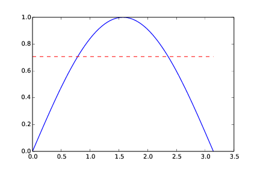
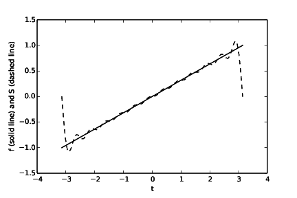

Exercises
Exercise 29: Hand calculations for the trapezoidal method
Compute by hand the area composed of two trapezoids (of equal width) that
approximates the integral \( \int_1^3 2x^3dx \). Make a test function
that calls the trapezoidal function in trapezoidal.m
and compares the return value with the hand-calculated value.
The code may be written as follows
function test_trapezoidal()
f = @(x) 2*x^3;
a = 1; b = 3;
n = 2;
numerical = trapezoidal(f, a, b, n);
hand = 44.0;
error = abs(numerical - hand);
tol = 1E-14;
assert(error < tol, '%f', error);
end
Filename: trapezoidal_test_func.m.
Exercise 30: Hand calculations for the midpoint method
Compute by hand the area composed of two rectangles (of equal width) that
approximates the integral \( \int_1^3 2x^3dx \). Make a test function
that calls the midpoint function in midpoint.m
and compares the return value with the hand-calculated value.
The code may be written as follows
function test_midpoint()
f = @(x) 2*x^3;
a = 1; b = 3;
n = 2;
numerical = midpoint(f, a, b, n);
hand = 38.0;
error = abs(numerical - hand);
tol = 1E-14;
assert(error < tol, '%f', error);
end
Filename: midpoint_test_func.m.
Exercise 31: Compute a simple integral
Apply the trapezoidal and midpoint functions to compute
the integral \( \int_2^6 x(x -1)dx \) with 2 and 100 subintervals.
Compute the error too.
The code may be written as follows
function integrate_parabola()
f = @(x) x*(x-1);
a = 2; b = 6;
n = 2
%n = 100
numerical_trap = trapezoidal(f, a, b, n);
numerical_mid = midpoint(f, a, b, n);
exact = 53.333 % Rounded
error_trap = abs(numerical_trap - exact);
error_mid = abs(numerical_mid - exact);
fprintf('For n = %d, we get: \n', n);
fprintf('Numerical trapezoid: %g , Error: %g \n',...
numerical_trap, error_trap);
fprintf('Numerical midpoint: %g , Error: %g \n',...
numerical_mid, error_mid);
end
In the code, we have taken the opportunity to show
how commenting often is used to switch between two
code fragments, typically single statements. The
alternatives n = 2 and n = 100 are switched by
removing/adding the comment sign #, before running
the code anew. Another alternative would of course be
to ask the user for the value of n.
Running the program with n = 2, produces the following printout:
For n = 2, we get:
Numerical trapezoid: 56 , Error: 2.667
Numerical midpoint: 52 , Error: 1.333
while running it with n = 100 gives:
For n = 100, we get:
Numerical trapezoid: 53.3344 , Error: 0.0014
Numerical midpoint: 53.3328 , Error: 0.0002
The analytical value of the integral is 53.333 (rounded).
Filename: integrate_parabola.m.
Exercise 32: Hand-calculations with sine integrals
We consider integrating the sine function: \( \int_0^b \sin (x)dx \).
a) Let \( b=\pi \) and use two intervals in the trapezoidal and midpoint method. Compute the integral by hand and illustrate how the two numerical methods approximates the integral. Compare with the exact value.
Analytically, the integral computes to 2. By hand, with the trapezoidal method, we get 1.570. Graphically (Figure 10), it is clear that the numerical approach will have to under-estimate the true result.
The area under the blue graph in Figure 10 corresponds to the "true" area under the graph of the integrand. The area under the red graph corresponds to what you get with the trapezoidal method and two intervals.
Figure 10: The integral computed with the trapezoidal method (n = 2).

By hand, with the midpoint method, we get 2.221. Graphically (Figure 11), we might see that the numerical approach will have to over-estimate the true result. Again, the area under the blue graph in Figure 11 corresponds to the "true" area under the graph of the integrand. The area under the red graph corresponds to what you get with the midpoint method and two intervals.
Figure 11: The integral computed with the midpoint method (n = 2).

b) Do a) when \( b=2\pi \).
Analytically, the integral computes to zero. In this case, both numerical methods will correctly calculate the integral to zero even with just two intervals! Graphically, we see that they arrive at zero for "different reasons". The trapezoidal method constructs both its trapezoids by use of the function (integrand) value at the midpoint of the whole interval. However, there the integrand crosses the x-axis, i.e. it evaluates to zero. The "area" computed by the trapezoidal method becomes the zero area located "between" the green graph and the x-axis in Figure 12. The midpoint method computes the areas of two rectangles (red graph in Figure 12), but since the signs of these equal areas differ, they add to zero.
Figure 12: The integral computed with the trapezoidal and midpoint method (n = 2).

Filename: integrate_sine.pdf.
Exercise 33: Make test functions for the midpoint method
Modify the file test_trapezoidal.m such that the
three tests are applied to the function midpoint implementing
the midpoint method for integration.
Note that also the midpoint method will do an exact (to within machine precision) integration when the integrand is a straight line. This is so, since the errors from each rectangle will cancel. The code reads:
function test_midpoint()
test_midpoint_one_exact_result();
test_midpoint_linear();
test_midpoint_conv_rate();
end
function test_midpoint_one_exact_result()
% Compare one hand-computed result.
v = @(t) 3*(t^2)*exp(t^3);
n = 2;
numerical = midpoint(v, 0, 1, n);
exact = 1.3817914596908085;
err = abs(exact - numerical);
tol = 1E-14;
assert(err < tol, '%f', err);
end
function test_midpoint_linear()
% Check that linear functions are integrated exactly
% ...they should, because errors with each rectangle cancel
f = @(x) 6*x - 4;
F = @(x) 3*x^2 - 4*x; % Anti-derivative
a = 1.2; b = 4.4;
exact = F(b) - F(a);
tol = 1E-14;
for n = [2 20 21]
numerical = midpoint(f, a, b, n);
err = abs(exact - numerical);
assert(err < tol, 'n = %d, err = %g', n, err);
end
end
function test_midpoint_conv_rate()
% Check empirical convergence rates against the expected -2.
v = @(t) 3*(t^2)*exp(t^3);
V = @(t) exp(t^3);
a = 1.1; b = 1.9;
num_experiments = 14;
r = convergence_rates(v, V, a, b, num_experiments)
tol = 0.01;
assert(abs(r(num_experiments-1)) - 2 < tol,...
'%f, %f, %f, %f, %f',...
r((num_experiments-1)-4:num_experiments-1));
end
function r = convergence_rates(f, F, a, b, num_experiments)
exact = F(b) - F(a);
n = zeros(num_experiments, 1);
E = zeros(num_experiments, 1);
r = zeros(num_experiments-1, 1);
for i = 1:num_experiments
n(i) = 2^i;
numerical = midpoint(f, a, b, n(i));
err = abs(exact - numerical);
E(i) = err;
if (i > 1)
r(i-1) = log(E(i-1)/E(i))/log(n(i-1)/n(i));
r(i-1) = round(r(i-1)*100)/100; % Truncate, two decimals
end
end
end
Filename: test_midpoint.m.
Exercise 34: Explore rounding errors with large numbers
The trapezoidal method integrates linear functions exactly, and this
property was used in the test function test_trapezoidal_linear in the file
test_trapezoidal.m. Change the function used in
the section Proper test procedures to \( f(x)=6\cdot 10^8 x - 4\cdot 10^6 \)
and rerun the test. What happens? How must you change the test
to make it useful? How does the convergence rate test behave? Any need
for adjustment?
With the new function given, we get the error message that includes:
AssertionError: n = 2, err = 9.53674e-07
The numerical calculation then obviously differs from the exact value by
more than what is specified in the tolerance tol. We may understand this
by considering the new function, i.e., \( f(x)=6\cdot 10^8 x - 4\cdot 10^6 \).
Any rounding error in \( x \) will get magnified big time by the factor \( 6\cdot 10^8 \) in front,
i.e. the slope of the line. This makes the numerical calculation more inaccurate than previously.
To fix this problem, we have several options. One possibility is to relax the tolerance, but
this is not very satisfactory. After all, the calculation is supposed to be "exact" for a straight
line. Another alternative is to introduce a new integration variable such
that we scale the interval \( [a,b] \) into \( [\frac{a}{6\cdot 10^8},\frac{b}{6\cdot 10^8}] \), as
this will neutralize the huge factor in front of \( x \), bringing the accuracy back to where it was previously. This
alternative is implemented in
test_trapezoidal2.m.
function test_trapezoidal_linear_scale()
% Check that linear functions are integrated exactly
f = @(x) 6E8*x - 4E6;
F = @(x) 3E8*x^2 - 4E6*x; % Anti-derivative
a = 1.2/6E8; b = 4.4/6E8; % Scale interval down
exact = F(b) - F(a);
tol = 1E-14;
for n = [2 20 21]
numerical = trapezoidal(f, a, b, n);
err = abs(exact - numerical);
assert(err < tol, 'n = %d, err = %g', n, err);
end
end
function test_trapezoidal2()
test_trapezoidal_linear_scale();
test_trapezoidal_linear_reldiff();
test_trapezoidal_conv_rate();
end
function test_trapezoidal_linear_scale()
% Check that linear functions are integrated exactly
f = @(x) 6E8*x - 4E6;
F = @(x) 3E8*x^2 - 4E6*x; % Anti-derivative
a = 1.2/6E8; b = 4.4/6E8; % Scale interval down
exact = F(b) - F(a);
tol = 1E-14;
for n = [2 20 21]
numerical = trapezoidal(f, a, b, n);
err = abs(exact - numerical);
assert(err < tol, 'n = %d, err = %g', n, err);
end
end
function test_trapezoidal_linear_reldiff()
% Check that linear functions are integrated exactly
f = @(x) 6E8*x - 4E6;
F = @(x) 3E8*x^2 - 4E6*x; % Anti-derivative
a = 1.2; b = 4.4
exact = F(b) - F(a);
tol = 1E-14;
for n = [2 20 21]
numerical = trapezoidal(f, a, b, n);
err = abs(exact - numerical)/exact;
assert(err < tol, 'n = %d, err = %g', n, err);
end
end
The best alternative, however, is to consider relative differences instead
of absolute differences. That is, we compute (exact - numerical)/exact
instead of just exact - numerical. This relative error is \( 10^{-16} \)
even if we compute with very big numbers.
function test_trapezoidal_linear_reldiff()
% Check that linear functions are integrated exactly
f = @(x) 6E8*x - 4E6;
F = @(x) 3E8*x^2 - 4E6*x; % Anti-derivative
a = 1.2; b = 4.4
exact = F(b) - F(a);
tol = 1E-14;
for n = [2 20 21]
numerical = trapezoidal(f, a, b, n);
err = abs(exact - numerical)/exact;
assert(err < tol, 'n = %d, err = %g', n, err);
end
end
Computing convergence rates is not meaningful in this test, because the error is mathematically zero.
Filename: test_trapezoidal2.m.
Exercise 35: Write test functions for \( \int_0^4\sqrt{x}dx \)
We want to test how the trapezoidal function works for the integral
\( \int_0^4\sqrt{x}dx \). Two of the tests in test_trapezoidal.m
are meaningful for this integral. Compute by hand the result of
using 2 or 3 trapezoids and modify the test_trapezoidal_one_exact_result
function accordingly. Then modify test_trapezoidal_conv_rate
to handle the square root integral.
Adjustments to the code are made according to the remark below and hand calculations are written into the code. The code then reads:
function test_trapezoidal3()
test_trapezoidal_one_exact_result();
test_trapezoidal_conv_rate();
end
function test_trapezoidal_one_exact_result()
% Compare one hand-computed result.
f = @(x) x^0.5;
tol = 1E-14;
exact = [4.82842712474619, 5.050258266979605]; %n=2, n=3
for n = [2 3]
numerical = trapezoidal(f, 0, 4, n);
err = abs(exact(n-1) - numerical);
assert(err < tol, '%f', err);
end
end
function test_trapezoidal_conv_rate()
% Check empirical convergence rates against the expected -2.
f = @(x) x^0.5;
F = @(x) (2/3)*x^(3/2);
a = 0.0 + 0.1; b = 4.0; % a adjusted by 0.1
num_experiments = 14;
r = convergence_rates(f, F, a, b, num_experiments)
tol = 0.01;
assert(abs(r(num_experiments-1)) - 2 < tol,...
'%f, %f, %f, %f, %f',...
r((num_experiments-1)-4:num_experiments-1));
end
function r = convergence_rates(f, F, a, b, num_experiments)
exact = F(b) - F(a);
n = zeros(num_experiments, 1);
E = zeros(num_experiments, 1);
r = zeros(num_experiments-1, 1);
for i = 1:length(num_experiments)
n(i) = 2^(i+1);
numerical = trapezoidal(f, a, b, n(i));
E(i) = abs(exact - numerical);
if (i > 1)
r(i-1) = log(E(i-1)/E(i))/log(n(i-1)/n(i));
r(i-1) = round(r(i-1)*100)/100; % Truncate, two decimals
end
end
end
Filename: test_trapezoidal3.m.
Remarks
The convergence rate test fails. Printing out r shows that the
actual convergence rate for this integral is \( -1.5 \) and not \( -2 \).
The reason is that the error in the trapezoidal method
is \( -(b-a)^3n^{-2}f''(\xi) \) for some (unknown) \( \xi\in [a,b] \).
With \( f(x)=\sqrt{x} \), \( f''(\xi)\rightarrow -\infty \) as \( \xi\rightarrow 0 \),
pointing to a potential problem in the size of the error.
Running a test with \( a>0 \), say \( \int_{0.1}^4\sqrt{x}dx \) shows that
the convergence rate is indeed restored to -2.
Exercise 36: Rectangle methods
The midpoint method divides the interval of integration into equal-sized subintervals and approximates the integral in each subinterval by a rectangle whose height equals the function value at the midpoint of the subinterval. Instead, one might use either the left or right end of the subinterval as illustrated in Figure 13. This defines a rectangle method of integration. The height of the rectangle can be based on the left or right end or the midpoint.
Figure 13: Illustration of the rectangle method with evaluating the rectangle height by either the left or right point.

a)
Write a function rectangle(f, a, b, n, height='left') for
computing an integral \( \int_a^bf(x)dx \) by the rectangle method
with height computed based on the value of height, which is either
left, right, or mid.
Placing the code for both a and b into one file, the code may read:
function rectangle_methods()
test_rectangle_one_exact_result();
test_rectangle_linear();
test_rectangle_conv_rate();
end
function result = rectangle(f, a, b, n, height)
% Uses a rectangle method for integrating f. The height of
% each rectangle is computed either at the left end, middle or
% right end of each sub-interval
h = (b-a)/n;
if height == 'l'
start = a;
elseif height == 'm'
start = a + h/2;
else % Must be right end
start = a + h;
end
result = 0;
for i = 0:(n-1)
result = result + f((start) + i*h);
end
result = h*result;
end
function test_rectangle_one_exact_result()
% Compare one hand-computed result
v = @(t) 3*(t^2)*exp(t^3);
method = ['l'; 'm'; 'r']; % ... left, mid and right
n = 2;
exact = [0.4249306699000599 1.3817914596908085...
4.5023534125886275];
tol = 1E-14;
for i = 1:length(method)
numerical = rectangle(v, 0, 1, n, method(i));
err = abs(exact(i) - numerical);
assert(err < tol, '%f', err);
end
end
function test_rectangle_linear()
% Check that linear functions are integrated exactly
% (with midpoint) or with a known correctable error (left
% and right)
method = ['l'; 'm'; 'r']; % ... left, mid and right
f = @(x) 6*x - 4;
slope = 6;
F = @(x) 3*x^2 - 4*x; % Anti-derivative
% From the slope of f (i.e. 6), we know that left will
% under-estimate the inegral by C (given below), while
% right will over-estimate by C
a = 1.2; b = 4.4;
exact = F(b) - F(a);
%tol = 1E-14
tol = 1E-13; % Slightly relaxed compared to previously
for n = [2 20 21]
h = (b-a)/n;
C = n*(0.5*slope*h^2); % Correction term for left/right
for i = 1:length(method)
numerical = rectangle(f, a, b, n, method(i));
if (method(i) == 'l')
numerical = numerical + C;
elseif (method(i) == 'r')
numerical = numerical - C;
end
err = abs(exact - numerical);
assert(err < tol, 'n = %d, err = %g', n, err);
end
end
end
function test_rectangle_conv_rate()
% Check empirical convergence rates against the expected rate,
% which is -2 for midpoint and -1 for left and right.
method = ['l'; 'm'; 'r']; % ... left, mid and right
v = @(t) 3*(t^2)*exp(t^3);
V = @(t) exp(t^3);
a = 1.1; b = 1.9;
tol = 0.01;
for i = 1:length(method)
r = convergence_rates(v, V, a, b, method(i), 14)
if (method(i) == 'l') || (method(i) == 'r')
assert(abs(r(length(r)-1)) - 1 < tol,...
'%f, %f, %f, %f, %f',...
r((num_experiments-1)-4:num_experiments-1));
else
assert(abs(r(length(r)-1)) - 2 < tol,...
'%f, %f, %f, %f, %f',...
r((num_experiments-1)-4:num_experiments-1));
end
end
end
function r = convergence_rates(f, F, a, b, height, num_experiments)
exact = F(b) - F(a);
n = zeros(num_experiments, 1);
E = zeros(num_experiments, 1);
r = zeros(num_experiments-1, 1);
for i = 1:num_experiments
n(i) = 2^i;
numerical = rectangle(f, a, b, n(i), height);
E(i) = abs(exact - numerical);
if (i > 1)
r(i-1) = log(E(i-1)/E(i))/log(n(i-1)/n(i));
r(i-1) = round(r(i-1)*100)/100; % Truncate, two decimals
end
end
end
b)
Write three test functions for the three unit test procedures
described in the section Proper test procedures. Make sure you
test for height equal to left, right, and mid. You may
call the midpoint function for checking the result when height=mid.
Edit test_trapezoidal.m.
See code above.
Filename: rectangle_methods.m.
Exercise 37: Adaptive integration
Suppose we want to use the trapezoidal or midpoint method to compute an integral \( \int_a^b f(x)dx \) with an error less than a prescribed tolerance \( \epsilon \). What is the appropriate size of \( n \)?
To answer this question, we may enter an iterative procedure where we compare the results produced by \( n \) and \( 2n \) intervals, and if the difference is smaller than \( \epsilon \), the value corresponding to \( 2n \) is returned. Otherwise, we halve \( n \) and repeat the procedure.
It may be a good idea to organize your code so that the function adaptive_integration can be used
easily in future programs you write.
a) Write a function
adaptive_integration(f, a, b, eps, method=midpoint)
that implements the idea above (eps corresponds to the tolerance
\( \epsilon \), and method can be midpoint or trapezoidal).
To ease future use of adaptive integration, we save the function adaptive_integration
in a separate file adaptive_integration.m:
function n_final = adaptive_integration(f, a, b, eps, method)
n_limit = 1000000; % Just a choice (to avoid inf loop)
n = 2;
if (method == 't')
integral_n = trapezoidal(f, a, b, n);
integral_2n = trapezoidal(f, a, b, 2*n);
diff = abs(integral_2n - integral_n);
fprintf('trapezoidal diff: %g \n', diff);
while (diff > eps) && (n < n_limit)
integral_n = trapezoidal(f, a, b, n);
integral_2n = trapezoidal(f, a, b, 2*n);
diff = abs(integral_2n - integral_n);
fprintf('trapezoidal diff: %g \n', diff);
n = 2*n;
end
elseif method == 'm'
integral_n = midpoint(f, a, b, n);
integral_2n = midpoint(f, a, b, 2*n);
diff = abs(integral_2n - integral_n);
fprintf('midpoint diff: %g \n', diff);
while (diff > eps) && (n < n_limit)
integral_n = midpoint(f, a, b, n);
integral_2n = midpoint(f, a, b, 2*n);
diff = abs(integral_2n - integral_n);
fprintf('midpoint diff: %g \n', diff);
n = 2*n;
end
else
display('Error - adaptive integr called with unknown par');
end
% Now we check if acceptable n was found or not
if diff <= eps % Success
fprintf('The integral computes to: %g \n', integral_2n);
n_final = n;
else
n_final = -n; % Return negative n to tell "not found"
end
end
b) Test the method on \( \int_0^2x^2dx \) and \( \int_0^2\sqrt{x}dx \) for \( \epsilon = 10^{-1}, 10^{-10} \) and write out the exact error.
The function adaptive_integration may be applied (as required in b and c)
by the statements in use_my_adaptive_integration.m:
%...tasks b) and c)
f = @(x) x^2;
g = @(x) sqrt(x);
%eps = 1E-1; % Just switch between these two eps values
eps = 1E-10;
%a = 0.0;
a = 0.0 + 0.01; % If we adjust a, sqrt(x) is handled easily
b = 2.0;
%...f
n = adaptive_integration(f, a, b, eps, 'm'); % 'm' for midpoint
if n > 0
fprintf('Sufficient n is: %d', n);
else
fprintf('No n was found in %d iterations \n', abs(n));
end
n = adaptive_integration(f, a, b, eps, 't'); % 't' for trapezoid
if n > 0
fprintf('Sufficient n is: %d', n);
else
fprintf('No n was found in %d iterations \n', abs(n));
end
%...g
n = adaptive_integration(g, a, b, eps, 'm');
if n > 0
fprintf('Sufficient n is: %d', n);
else
fprintf('No n was found in %d iterations \n', abs(n));
end
n = adaptive_integration(g, a, b, eps, 't');
if n > 0
fprintf('Sufficient n is: %d', n);
else
fprintf('No n was found in %d iterations \n', abs(n));
end
%task c, make plot for both midpoint and trapezoidal
eps = linspace(1E-1, 10E-10, 10);
n_m = zeros(length(eps), 1);
n_t = zeros(length(eps), 1);
for i = 1:length(n_m)
n_m(i) = adaptive_integration(g, a, b, eps(i), 'm');
n_t(i) = adaptive_integration(g, a, b, eps(i), 't');
end
plot(log(eps), n_m, 'b-', log(eps), n_t, 'r-');
xlabel('log(eps)');
ylabel('n for midpoint (blue) and trapezoidal (red)');
n
eps
Note that, in our suggested code, it is foreseen that the programmer switches between the
two epsilon values by use of commenting, i.e.
adding/removing %. This may of course be avoided, if desirable, by asking the user for epsilon.
c) Make a plot of \( n \) versus \( \epsilon \in [10^{-1}, 10^{-10}] \) for \( \int_0^2\sqrt{x}dx \). Use logarithmic scale for \( \epsilon \).
From Figure 14, we see that the stricter the value of epsilon, the larger the
difference between the midpoint and the trapezoidal methods. For a given value for epsilon, the
midpoint method comes within the tolerance with fewer intervals (lower value of n) than does
the trapezoidal method. This should be expected, since the midpoint method is somewhat more accurate
than the trapezoidal method.
Figure 14: Showing n as a function of log(eps) when \( \int_0^2\sqrt{x}dx \) is computed by the midpoint (blue) and the trapezoidal (red) method.

One way of producing this plot, is by using the code lines included at the end of
use_my_adaptive_integration.m (see the above).
Filename: adaptive_integration.m.
Remarks
The type of method explored in this exercise is called adaptive, because it tries to adapt the value of \( n \) to meet a given error criterion. The true error can very seldom be computed (since we do not know the exact answer to the computational problem), so one has to find other indicators of the error, such as the one here where the changes in the integral value, as the number of intervals is doubled, is taken to reflect the error.
Exercise 38: Integrating x raised to x
Consider the integral
$$ I = \int_0^4 x^x\,dx\thinspace .$$
The integrand \( x^x \) does not have an anti-derivative that can be expressed in terms of standard functions (visit http://wolframalpha.com and type
integral(x^x,x) to convince yourself that
our claim is right. Note that Wolfram alpha does give you an answer, but that answer is an approximation, it is not exact. This is because
Wolfram alpha too uses numerical methods to arrive at the answer, just as you will in this exercise). Therefore, we are forced to compute the integral by numerical methods. Compute a result that is right to four digits.
Use ideas from Exercise 37: Adaptive integration.
When the function adaptive_integration is available, the code may be written as:
f = @(x) x^x;
eps = 1E-4;
a = 0.0; b = 2.0
% ...choose the midpoint method
n = adaptive_integration(f, a, b, eps, 'm'); % m for midpoint
if n > 0
fprintf('Sufficient n is: %d \n', n);
else
% The negative n is returned to signal that the upper
% limit of n was passed.
fprintf('No n was found in %d iterations \n', abs(n));
end
Remember that adaptive_integration prints out the computed integral, so no effort
in that respect is required here.
Running the program, gives a printout to the screen showing how diff gets smaller and
smaller each time. The final two lines of the printout read:
The integral computes to: 2.83384395958
Sufficient n is: 256
The computed value may be compared to what Wolfram alpha gives. Remember that since we have not computed the exact error, we can not guarantee that the "result is right to four digits". However, we have reason to believe that we "are close". Typically, when it is known that the error measure used is not precise, the tolerance is made stricter.
Filename: integrate_x2x.m.
Exercise 39: Integrate products of sine functions
In this exercise we shall integrate $$ I_{j,k} = \int_{-\pi}^{\pi} \sin(jx)\sin(kx)dx,$$ where \( j \) and \( k \) are integers.
a) Plot \( \sin(x)\sin(2x) \) and \( \sin(2x)\sin(3x) \) for \( x\in ]-\pi,\pi] \) in separate plots. Explain why you expect \( \int_{-\pi}^{\pi}\sin x\sin 2x\,dx=0 \) and \( \int_{-\pi}^{\pi}\sin 2x\sin 3x\,dx=0 \).
b) Use the trapezoidal rule to compute \( I_{j,k} \) for \( j=1,\ldots,10 \) and \( k=1,\ldots,10 \).
Filename: products_sines.m.
Exercise 40: Revisit fit of sines to a function
This is a continuation of Exercise 27: Fit sines to straight line. The task is to approximate a given function \( f(t) \) on \( [-\pi,\pi] \) by a sum of sines, $$ \begin{equation} S_N(t) = \sum_{n=1}^{N} b_n \sin(nt)\thinspace . \tag{3.27} \end{equation} $$ We are now interested in computing the unknown coefficients \( b_n \) such that \( S_N(t) \) is in some sense the best approximation to \( f(t) \). One common way of doing this is to first set up a general expression for the approximation error, measured by "summing up" the squared deviation of \( S_N \) from \( f \): $$ E = \int_{-\pi}^{\pi}(S_N(t)-f(t))^2dt\thinspace .$$ We may view \( E \) as a function of \( b_1,\ldots,b_N \). Minimizing \( E \) with respect to \( b_1,\ldots,b_N \) will give us a best approximation, in the sense that we adjust \( b_1,\ldots,b_N \) such that \( S_N \) deviates as little as possible from \( f \).
Minimization of a function of \( N \) variables, \( E(b_1,\ldots,b_N) \) is mathematically performed by requiring all the partial derivatives to be zero: $$ \begin{align*} \frac{\partial E}{\partial b_1} & = 0,\\ \frac{\partial E}{\partial b_2} & = 0,\\ &\vdots\\ \frac{\partial E}{\partial b_N} & = 0\thinspace . \end{align*} $$
a) Compute the partial derivative \( \partial E/\partial b_1 \) and generalize to the arbitrary case \( \partial E/\partial b_n \), \( 1\leq n\leq N \).
We see that the partial derivative of \( E \) with respect to any one of the \( b \) coefficients will take on the same form, meaning that $$ \begin{equation*} \frac{\partial E}{\partial b_n} = 2\int_{-\pi}^{\pi} (S_N(t)-f(t))\sin(nt)dt, \nonumber \end{equation*} $$ where \( 1\leq n\leq N \).
b) Show that $$ b_n = \frac{1}{\pi}\int_{-\pi}^{\pi}f(t)\sin(nt)\,dt\thinspace .$$
Requiring $$ \begin{equation*} \frac{\partial E}{\partial b_n} = 0, \nonumber \end{equation*} $$ means that the following must apply, $$ \begin{equation*} 2\int_{-\pi}^{\pi} (S_N(t)-f(t))\sin(nt)dt = 0. \nonumber \end{equation*} $$ This may be rewritten as $$ \begin{equation*} \int_{-\pi}^{\pi} S_N(t)\sin(nt)dt = \int_{-\pi}^{\pi} f(t)\sin(nt)dt \nonumber \end{equation*} $$ or, if we insert the expression for \( S_N \), we get $$ \begin{equation*} \int_{-\pi}^{\pi} (\sum_{i=1}^{N} b_i \sin(it))\sin(nt)dt = \int_{-\pi}^{\pi} f(t)\sin(nt)dt, \nonumber \end{equation*} $$ where the summation variable in \( S_N \) has been changed from \( n \) to \( i \), avoiding conflict with the \( n \) already present in \( \sin(nt) \).
Now, since $$ \begin{equation*} \int_{-\pi}^{\pi} \sin^2(nt)dt = \pi, \nonumber \end{equation*} $$ while $$ \begin{equation*} \int_{-\pi}^{\pi} \sin(it)\sin(nt)dt = 0, \nonumber \end{equation*} $$ when \( i \neq n \), we arrive at $$ b_n = \frac{1}{\pi}\int_{-\pi}^{\pi}f(t)\sin(nt)\,dt\thinspace .$$
c)
Write a function integrate_coeffs(f, N, M) that computes \( b_1,\ldots,b_N \)
by numerical integration, using \( M \) intervals in the trapezoidal rule.
Answers to all (programming) questions in this exercise are collected in one script which reads:
function autofit_sines()
f = @(t) (1/pi)*t;
N = 3;
M = 100;
b = integrate_coeffs(f, N, M)
for N = [3 6 12 24]
plot_filename = strcat('S_whenNis', num2str(N), '.pdf');
plot_approx(f, N, M, plot_filename);
end
g = @(t) exp(-(t-pi));
plot_filename = ...
strcat('new_f_S_whenNis', num2str(100), '.pdf');
plot_approx(g, 100, M, plot_filename);
end
function b_coeffs = integrate_coeffs(f, N, M)
b = zeros(N,1);
left_end = -pi; right_end = pi;
for n = 1:N
f_sin = @(t) f(t)*sin(n*t);
b(n) = (1/pi)*trapezoidal(f_sin, left_end, right_end, M);
end
b_coeffs = b;
end
function test_integrate_coeffs()
% Check that sin(nt) are integrated exactly by trapezoidal
f = @() 1;
tol = 1E-14;
N = 10; M = 100;
b = integrate_coeffs(f, N, M);
b
for i = 1:N
err = abs(b(i)) % Supposed to be zero
assert(err < tol, 'n = %d, err = %g', n, err);
end
end
function plot_approx(f, N, M, filename)
function result = S_N(b,t)
sum = 0;
for i = 1:N
sum = sum + b(i)*sin((i)*t);
end
result = sum;
end
left_end = -pi; right_end = pi;
time = linspace(-pi,pi,100);
y = f(time);
b = integrate_coeffs(f, N, M);
y_approx = S_N(b,time);
h = figure; plot(time,y,'k-',time,y_approx,'k--');
xlabel('t'); ylabel('f (solid line) and S (dashed line)');
print(filename, '-dpdf');
end
d)
A remarkable property of the trapezoidal rule is that it is exact for integrals
\( \int_{-\pi}^{\pi}\sin nt\,dt \) (when subintervals are of equal size). Use this
property to create a function test_integrate_coeff to verify the
implementation of integrate_coeffs.
See code given above.
e)
Implement the choice \( f(t) = \frac{1}{\pi}t \) as a Matlab function
f(t) and call integrate_coeffs(f, 3, 100) to see what the
optimal choice of \( b_1, b_2, b_3 \) is.
See code given above. Running the script produces a printout of the following values for the \( b \) coefficients:
0.63641032
-0.3178909
0.2115779
f)
Make a function plot_approx(f, N, M, filename) where you plot f(t)
together with the best approximation \( S_N \) as computed above,
using \( M \) intervals for numerical integration. Save the plot to a file
with name filename.
See code given above.
g)
Run plot_approx(f, N, M, filename) for \( f(t) = \frac{1}{\pi}t \)
for \( N=3,6,12,24 \). Observe how the approximation improves.
See code given above. Running the program will produce one plot (Figure 15, Figure 16, Figure 17 and Figure 18) for each value of \( N \). We see from the plots that the larger the \( N \), the better the approximation.
Figure 15: The function \( f(t) \) and its approximation \( S_N(t) \) when \( N = 3 \).

Figure 16: The function \( f(t) \) and its approximation \( S_N(t) \) when \( N = 6 \).

Figure 17: The function \( f(t) \) and its approximation \( S_N(t) \) when \( N = 12 \).

Figure 18: The function \( f(t) \) and its approximation \( S_N(t) \) when \( N = 24 \).

h)
Run plot_approx for \( f(t) = e^{-(t-\pi)} \) and \( N=100 \).
Observe a fundamental problem: regardless of \( N \), \( S_N(-\pi)=0 \), not
\( e^{2\pi}\approx 535 \). (There are ways to fix this issue.)
See code given above. Running the program (also) produces the plot seen in Figure 19. Clearly, the approximation is no good at the endpoints of the interval.
Figure 19: The new function \( f(t) \) and its approximation \( S_N(t) \) when \( N = 100 \).
Filename: autofit_sines.m.
Exercise 41: Derive the trapezoidal rule for a double integral
Use ideas in the section The midpoint rule for a double integral to derive a formula for computing a double integral \( \int_a^b\int_c^d f(x,y)dydx \) by the trapezoidal rule. Implement and test this rule.
We introduce a help function \( g(x) \) and write $$ \int_a^b \int_c^d f(x,y) dydx = \int_a^b g(x)dx,\quad g(x) = \int_c^d f(x,y) dy\thinspace .$$ Next, we apply the trapezoidal rule (The composite trapezoidal rule) to each of the integrals $$ \int_a^b g(x)dx,\quad g(x) = \int_c^d f(x,y) dy\thinspace .$$
Starting with \( g(x)=\int_c^d f(x,y)dy \), we introduce \( n_y \) intervals on \( [c,d] \) with length \( h_y \). The trapezoidal rule for this integral then becomes $$ g(x) = \int_c^d f(x,y) dy \approx h_y \left[\frac{1}{2}f(x,c) + \sum_{j=1}^{n_y-1}f(x,y_j) + \frac{1}{2}f(x,d) \right],$$ with \( y_j = c + jh_y \). For the outer integral \( \int_a^b g(x)dx \), we get: $$ \int_a^b g(x)dx \approx h_x \left[\frac{1}{2}g(a) + \sum_{i=1}^{n_x-1}g(x_i) + \frac{1}{2}g(b) \right], \quad x_i=a + ih_x\thinspace .$$ Combining the formulas, we get the composite trapezoidal method for a double integral: $$ \begin{align} \int_a^b \int_c^d f(x,y) dydx &\approx h_x \biggl[\frac{1}{2}\left(h_y \left[\frac{1}{2}f(a,c) + \sum_{j=1}^{n_y-1}f(a,y_j) + \frac{1}{2}f(a,d) \right]\right) + \nonumber\\ &\quad \sum_{i=1}^{n_x-1}\left(h_y \left[\frac{1}{2}f(x_i,c) + \sum_{j=1}^{n_y-1}f(x_i,y_j) + \frac{1}{2}f(x_i,d) \right]\right)+\nonumber\\ &\quad \frac{1}{2}\left(h_y \left[\frac{1}{2}f(b,c) + \sum_{j=1}^{n_y-1}f(b,y_j) + \frac{1}{2}f(b,d) \right]\right) \biggr]\nonumber\\ &= h_xh_y \biggl[\frac{1}{4}\left(f(a,c) + f(a,d) + f(b,c) + f(b,d) \right) +\nonumber\\ &\quad \frac{1}{2}\sum_{i=1}^{n_x-1}\left(f(a + ih_x,c) + f(a + ih_x,d)\right) + \nonumber\\ &\quad \frac{1}{2}\sum_{j=1}^{n_y-1}\left(f(a,c + jh_y) + f(b,c + jh_y)\right) + \nonumber\\ &\quad \sum_{i=1}^{n_x-1} \sum_{j=1}^{n_y-1} f(a + ih_x, c + jh_y)\biggr]\thinspace . \nonumber \end{align} $$
The formula may be implemented and tested as shown in trapezoidal_double.m and
test_trapezoidal_double.m, respectively:
function result = trapezoidal_double(f, a, b, c, d, nx, ny)
hx = (b - a)/nx;
hy = (d - c)/ny;
I = 0.25*(f(a, c) + f(a, d) + f(b, c) + f(b, d));
Ix = 0;
for i = 1:(nx-1)
xi = a + i*hx;
Ix = Ix + f(xi, c) + f(xi, d);
end
I = I + 0.5*Ix;
Iy = 0;
for j = 1:(ny-1)
yj = c + j*hy;
Iy = Iy + f(a, yj) + f(b, yj);
end
I = I + 0.5*Iy;
Ixy = 0;
for i = 1:(nx-1)
for j = 1:(ny-1)
xi = a + i*hx;
yj = c + j*hy;
Ixy = Ixy + f(xi, yj);
end
end
I = I + Ixy;
I = hx*hy*I;
result = I;
end
function test_trapezoidal_double()
% Test that a linear function is integrated exactly.
f = @(x, y) 2*x + y;
a = 0; b = 2; c = 2; d = 3;
syms x y;
I_expected = int(int(f, y, c, d), x, a, b);
% Test three cases: nx < ny, nx = ny, nx > ny
nx = 3; ny = 5;
for i = (0:2)
nx = nx + 1; ny = ny - 1;
I_computed = trapezoidal_double(f, a, b, c, d, nx, ny)
tol = 1E-14;
%fprintf('I_expected = %g, I_computed = %g\n',...
% I_expected, I_computed);
err = abs(I_computed - I_expected);
assert(absI_computed - I_expected) < tol);
end
end
Filename: trapezoidal_double.m.
Exercise 42: Compute the area of a triangle by Monte Carlo integration
Use the Monte Carlo method from the section Monte Carlo integration for complex-shaped domains to compute the area of a triangle with vertices at \( (-1,0) \), \( (1,0) \), and \( (3,0) \).
The program MC_triangle.m may be written as:
function MC_triangle()
% Utlize the symmetry of domain about y-axis
g = @(x, y) -1 + 2*(0 <= y && y <= -3*abs(x) + 3);
MonteCarlo_double(@(x, y) 1, g, -1, 1, 0, 3, 1000)
end
Filename: MC_triangle.m.